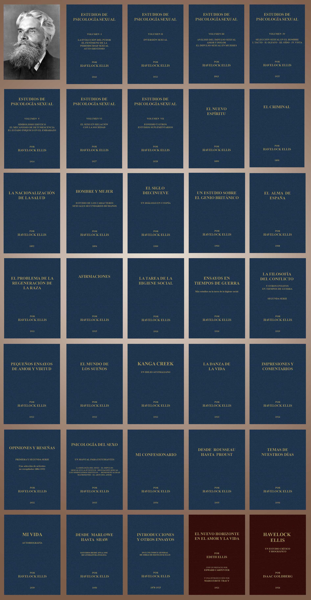

Las Obras completas de Havelock Ellis:

Havelock Ellis fue un hombre brillante; un pionero en la demolición de la anticuada moralidad victoriana y un fundador de la sexología moderna. Pero aparte de la sexualidad humana, sus intereses abarcaron muchos temas y los títulos de sus libros son el testimonio de ello. Todos los libros de Ellis fueron publicados en inglés, algunos traducidos a distintos idiomas, incluso al español. Pero no existe en ningún otro idioma una colección completa, uniforme y exhaustiva como esta que presentamos en español en honor al amor que Ellis profesaba por España. Las obras completas de Havelock Ellis en español son el fruto de dos años de investigación, traducción, revisión y edición. Están disponibles en formato PDF (Portable Document Format) como conjunto o individualmente a precios muy accesibles.